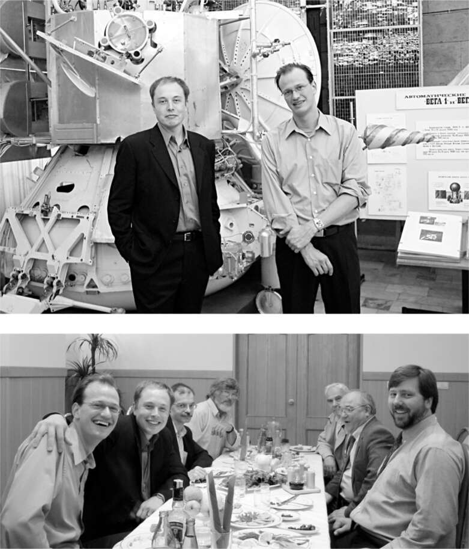

Nga
Bữa trưa trong căn phòng phía sau một nhà hàng tồi tàn ở Moscow gồm những món ăn nhỏ xen kẽ với những ly vodka lớn. Musk đến đó vào buổi sáng cùng Adeo Ressi và Jim Cantrell trong hành trình tìm mua một tên lửa cũ của Nga cho sứ mệnh lên Sao Hỏa của họ, và anh trông khá mệt mỏi sau một đêm tiệc tùng ở Paris. Thêm vào đó, anh không phải là người uống rượu nhiều, nên anh không chịu được. "Tôi đã tính toán trọng lượng của thức ăn và trọng lượng của vodka, và chúng gần như bằng nhau," anh nhớ lại. Sau nhiều lần nâng ly chúc mừng tình hữu nghị, người Nga tặng người Mỹ những chai vodka có nhãn in hình ảnh của mỗi người trên nền Sao Hỏa. Musk, người đang dùng tay đỡ đầu, đã bất tỉnh và đầu anh đập xuống bàn. "Tôi không nghĩ mình đã gây ấn tượng với người Nga," anh nói.
Tối hôm đó, sau khi tỉnh táo hơn một chút, Musk và những người bạn đồng hành đã gặp một nhóm khác ở Moscow, được cho là đang bán tên lửa ngừng hoạt động. Cuộc gặp gỡ đó hóa ra cũng kỳ lạ không kém. Người Nga phụ trách bị mất một chiếc răng cửa, nên mỗi khi ông ta nói to, điều thường xuyên xảy ra, nước bọt sẽ bắn về phía Musk. Có lúc, khi Musk bắt đầu nói về việc cần phải đưa con người trở thành loài đa hành tinh, người Nga này đã tỏ ra rất khó chịu. "Tên lửa này chưa bao giờ được thiết kế cho bọn tư bản dùng để lên Sao Hỏa trong một nhiệm vụ vớ vẩn," ông ta hét lên. "Kỹ sư trưởng của anh là ai?" Musk thừa nhận đó là anh. Lúc đó, Cantrell nhớ lại, người Nga đã nhổ nước bọt vào họ.
"Ông ta vừa nhổ vào chúng ta à?" Musk hỏi.
"Ừ, đúng vậy," Cantrell trả lời. "Tôi nghĩ đó là một dấu hiệu của sự thiếu tôn trọng."
Bất chấp màn kịch hề đó, Musk và Cantrell quyết định quay lại Nga vào đầu năm 2002. Ressi không đi cùng, nhưng Justine thì có. Một thành viên mới của nhóm cũng tham gia, Mike Griffin, một kỹ sư hàng không vũ trụ, người sau này trở thành quản trị viên của NASA.
Lần này, Musk tập trung vào việc mua hai tên lửa Dnepr, vốn là tên lửa cũ. Càng thương lượng, giá càng tăng. Cuối cùng, anh nghĩ rằng mình đã có một thỏa thuận với giá 18 triệu đô la cho hai chiếc Dnepr. Nhưng sau đó, họ nói không, đó là 18 triệu đô la cho mỗi chiếc. "Tôi kiểu, 'Này, điên rồ quá đấy chứ,' " anh nói. Sau đó, người Nga gợi ý có thể là 21 triệu đô la cho mỗi chiếc. "Họ chế nhạo anh ấy," Cantrell nhớ lại. "Họ nói, 'Này, nhóc con, mày không có tiền à?' "
May mắn thay, các cuộc họp đã diễn ra không suôn sẻ. Điều này đã thôi thúc Musk nghĩ lớn hơn. Thay vì chỉ sử dụng tên lửa cũ để đưa một nhà kính thử nghiệm lên Sao Hỏa, ông đã hình dung ra một dự án táo bạo hơn nhiều, một trong những dự án táo bạo nhất của thời đại chúng ta: tự chế tạo tên lửa có thể phóng vệ tinh và sau đó là con người vào quỹ đạo, cuối cùng đưa họ đến Sao Hỏa và xa hơn nữa. "Tôi đã khá tức giận, và khi tôi tức giận, tôi cố gắng nhìn nhận lại vấn đề."
Khi bực tức về mức giá vô lý mà người Nga đưa ra, ông đã vận dụng tư duy nguyên tắc cơ bản, đi sâu vào nền tảng vật lý của vấn đề và xây dựng từ đó. Điều này dẫn ông đến việc phát triển cái mà ông gọi là "chỉ số ngớ ngẩn", dùng để tính toán chi phí của một sản phẩm hoàn chỉnh cao hơn bao nhiêu so với chi phí nguyên vật liệu cơ bản của nó. Nếu một sản phẩm có chỉ số ngớ ngẩn cao, chi phí của nó có thể giảm đáng kể bằng cách nghĩ ra các kỹ thuật sản xuất hiệu quả hơn.
Tên lửa có chỉ số ngớ ngẩn cực kỳ cao. Musk bắt đầu tính toán chi phí của sợi carbon, kim loại, nhiên liệu và các vật liệu khác cấu thành nên chúng. Sản phẩm hoàn chỉnh, sử dụng các phương pháp sản xuất hiện tại, có giá cao hơn ít nhất năm mươi lần so với chi phí nguyên liệu.
Nếu nhân loại muốn đến Sao Hỏa, công nghệ tên lửa phải được cải thiện triệt để. Và việc dựa vào tên lửa đã qua sử dụng, đặc biệt là tên lửa cũ của Nga, sẽ không thúc đẩy công nghệ tiến lên.
Vì vậy, trên chuyến bay trở về, ông đã lấy máy tính ra và bắt đầu lập bảng tính chi tiết tất cả các vật liệu và chi phí để chế tạo một tên lửa cỡ trung bình. Cantrell và Griffin, ngồi ở hàng ghế phía sau, gọi đồ uống và cười. "Cái tên ngốc nghếch đó đang làm cái quái gì vậy?" Griffin hỏi Cantrell.
Musk quay lại và trả lời họ. "Này các cậu," ông nói, cho họ xem bảng tính, "Tôi nghĩ chúng ta có thể tự chế tạo tên lửa này." Khi Cantrell nhìn vào các con số, anh ta tự nhủ: "Chết tiệt, đó là lý do tại sao anh ta mượn hết sách của tôi." Sau đó, anh ta gọi tiếp viên hàng không để gọi thêm đồ uống.
Khi Musk quyết định muốn thành lập công ty tên lửa của riêng mình, bạn bè của ông đã làm những gì mà những người bạn thực sự làm trong tình huống như vậy: họ đã can thiệp.
"Khoan đã, anh bạn, 'Tôi bị Nga chơi xỏ' không đồng nghĩa với 'thành lập một công ty phóng tên lửa'," Adeo Ressi nói với ông. Ressi đã làm một đoạn phim nổi bật về hàng chục quả tên lửa phát nổ, và anh ta đã tập hợp bạn bè bay đến Los Angeles, nơi họ tụ tập với Musk để khuyên can ông. "Họ bắt tôi xem một đoạn phim về những quả tên lửa phát nổ, vì họ muốn thuyết phục tôi rằng tôi sẽ mất hết tiền," Musk nói.
Những tranh luận về rủi ro càng củng cố quyết tâm của Musk. Ông thích rủi ro. "Nếu bạn đang cố gắng thuyết phục tôi rằng điều này có xác suất thất bại cao, thì tôi đã biết rồi," ông nói với Ressi. "Kết quả có thể xảy ra nhất là tôi sẽ mất hết tiền. Nhưng còn lựa chọn nào khác? Không có tiến bộ nào trong việc khám phá không gian? Chúng ta phải thử làm điều này, hoặc chúng ta sẽ bị mắc kẹt trên Trái đất mãi mãi."
Đó là một đánh giá khá khoa trương về việc ông không thể thiếu đối với sự tiến bộ của nhân loại. Nhưng giống như nhiều khẳng định gây cười nhất của Musk, nó chứa đựng một phần sự thật. "Tôi muốn nuôi hy vọng rằng con người có thể trở thành một nền văn minh du hành vũ trụ và sống giữa các vì sao," ông nói. "Và sẽ không có cơ hội nào cho điều đó trừ khi một công ty mới được thành lập để tạo ra những tên lửa mang tính cách mạng."
Hành trình không gian của Musk khởi đầu là một dự án phi lợi nhuận nhằm khơi dậy niềm đam mê cho sứ mệnh lên Sao Hỏa, nhưng giờ đây, ông đã có sự kết hợp các động lực sẽ đánh dấu sự nghiệp của mình. Ông sẽ làm điều gì đó táo bạo, được thúc đẩy bởi một ý tưởng lớn. Nhưng ông cũng muốn nó thiết thực và sinh lời, để có thể tự duy trì. Điều đó có nghĩa là sử dụng tên lửa để phóng vệ tinh thương mại và chính phủ.
Ông quyết định bắt đầu với một tên lửa nhỏ hơn, chi phí không quá cao. "Chúng ta sẽ làm những việc ngớ ngẩn, nhưng đừng làm những việc ngớ ngẩn trên quy mô lớn", ông nói với Cantrell. Thay vì phóng các trọng tải lớn như Lockheed và Boeing, Musk sẽ tạo ra một tên lửa ít tốn kém hơn cho các vệ tinh nhỏ hơn đang trở nên khả thi nhờ những tiến bộ trong bộ vi xử lý. Ông tập trung vào một chỉ số quan trọng: chi phí để đưa mỗi pound trọng tải lên quỹ đạo. Mục tiêu tối đa hóa lực đẩy trên mỗi đô la đã dẫn dắt nỗi ám ảnh của ông về việc tăng lực đẩy của động cơ, giảm khối lượng của tên lửa và làm cho chúng có thể tái sử dụng.
Musk đã cố gắng tuyển dụng hai kỹ sư đã cùng ông đến Moscow. Nhưng Mike Griffin không muốn chuyển đến Los Angeles. Ông đang làm việc cho In-Q-Tel, một công ty đầu tư mạo hiểm do CIA tài trợ có trụ sở tại khu vực Washington, DC, và ông đang hướng tới một tương lai đầy hứa hẹn trong chính sách khoa học. Quả thực, Tổng thống George W. Bush đã bổ nhiệm ông làm giám đốc NASA vào năm 2005. Jim Cantrell đã cân nhắc việc tham gia, nhưng ông yêu cầu rất nhiều sự đảm bảo về công việc mà Musk không sẵn lòng đáp ứng. Vì vậy, Musk cuối cùng đã trở thành, theo mặc định, kỹ sư trưởng của công ty.
Musk thành lập Space Exploration Technologies vào tháng 5 năm 2002. Ban đầu, ông gọi công ty bằng tên viết tắt, SET. Vài tháng sau, ông đã làm nổi bật chữ cái yêu thích của mình bằng cách chuyển sang một cái tên dễ nhớ hơn, SpaceX. Mục tiêu của nó, ông nói trong một bài thuyết trình ban đầu, là phóng tên lửa đầu tiên vào tháng 9 năm 2003 và gửi một sứ mệnh không người lái lên Sao Hỏa vào năm 2010. Do đó, tiếp tục truyền thống mà ông đã thiết lập tại PayPal: đặt ra các mốc thời gian phi thực tế, biến những ý tưởng hoang đường của ông từ hoàn toàn điên rồ thành chỉ đơn thuần là rất muộn.

Cùng Adeo Ressi tại một cơ sở tên lửa và bữa tối với người Nga ở Moscow